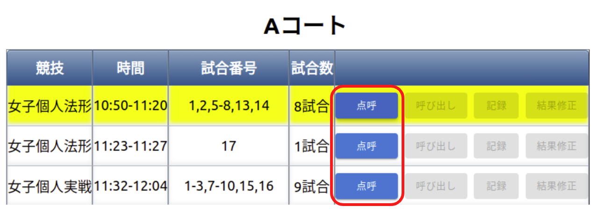

はじめに
躰道大会管理システムについてのドキュメントである。
ツール
ドキュメントはMarkdown形式で記述し、mdbook を用いてビルドしている。
リアルタイムにレンダリング結果を確認しながら、ドキュメントを書きたい時は、mdbookをインストールし以下のように実行する。
mdbook serve
開発環境構築
必要な環境
- Docker
手順
以下のコマンドを本レポジトリのルートで実行しビルドする。
docker build -t taido-competition-record .
出来たイメージを使ってコンテナを立ち上げる。
docker compose up
ポート被りが無ければ、http://localhost:3000 でアクセスできる。 ポート番号は .env の PORT で指定できる。
.env の COMPETITION_NAME を変更することで、コンテナを立ち上げた際にDBにinsertするデータを変更できる。 COMPETITION_NAME には data/ 直下のディレクトリ名を指定する。
開発用ツール
フォーマット修正
開発環境構築の手順に従いイメージを作成しておく必要がある。
本レポジトリのルートで以下を実行する。
tools/format.bash
データベース/キャッシュの初期化
作業中コンテナの状態を初期化したい場合は本レポジトリのルートで以下を実行する。
tools/reset.bash
静的解析
開発環境構築の手順に従いイメージを作成しておく必要がある。
本レポジトリのルートで以下を実行する。
tools/lint.bash
サイトの構成
大会結果閲覧用を除いて、BASIC認証がかかっている。 .envのUSERNAME, PASSWORDに設定される。
| アクセス先 | 説明 |
|---|---|
| / | 大会結果閲覧用 |
| /admin | 大会運営用 |
| /test | システムテスト用 |
結果出力
最終結果pdf
躰道公式サイトに載せている最終結果は、各競技結果ページにおいて 印刷出力(e.g. Ctrl+Pを押下 => "Save as pdf" を選択し保存)を行い、FTP経由でアップロードする。
各競技の入賞者
褒賞授与や、総合得点の計算などは現在はエクセルベースで行っており、その計算には 各種目毎の1~4位の選手/団体のIDをエクセルに入力する必要がある。
その情報は以下のようにAPIを叩くことで取得することができる。
# eg. EVENT_NAME=(hokei_man|hokei_woman|zissen_man|zissen_woman|hokei_sonen|dantai_zissen_man|dantai_zissen_woman)
curl http://(SERVER_NAME)/api/get_winners?event_name=(EVENT_NAME) | jq
選手点呼係
- 各競技の選手の点呼を行う。
タブレット操作方法


選手呼び出し係
- 選手棄権が出ていないか競技開始前に確認する（以下の選手呼び出し画面で確認できます）。
- 各試合時の号令・選手呼び出しを行う。
タブレット操作方法


実戦トーナメント途中で負傷し、反則勝利の際、次の試合でドクターストップが掛けられた場合、 赤・白棄権のボタンで該当選手に取り消し線を付けることができます。

※赤・白棄権ボタンをもう一度押下すると取り消し線は消えます。
※二回戦以降の棄権になるため、トーナメントに取り消し線は引かれません。